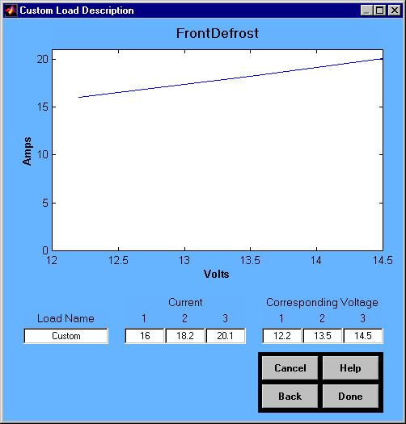
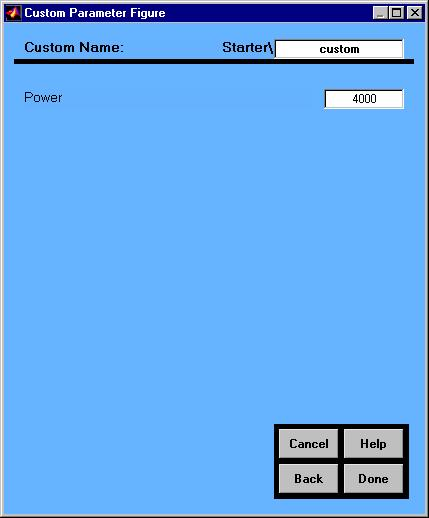

Auxiliary Loads Help
Custom Load Creation and Modification
Overview
Two methods of creating and modifying custom auxiliary loads exist. The method available depends on the load selected. Most loads are defined by a voltage current relationship (Figure 1). All other loads are defined using variations of Figure 2.
The voltage current loads are defined by three currents at three voltages. The currents, voltages, and descriptive name can be edited. The plot illustrates the current-voltage relationship. For Advisor alone runs (non-Saber), the average power produced by the voltage current relationship is used for the simulation.

Figure 1

Figure 2
Back to Auxiliary Loads Help
ADVISOR Documentation Contents
Last Revised: [10-August-2001]: ab